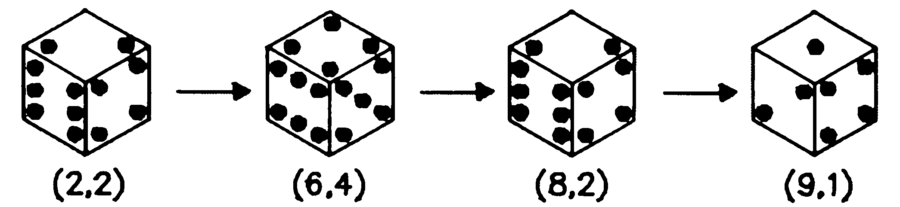
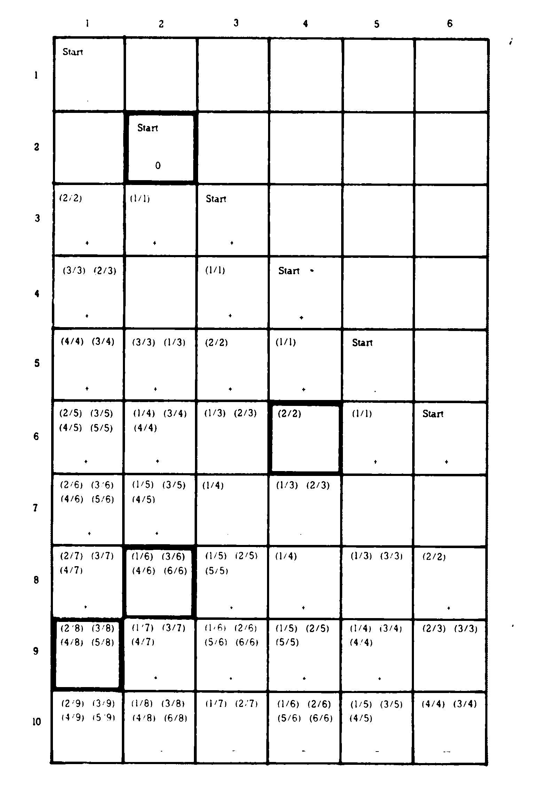
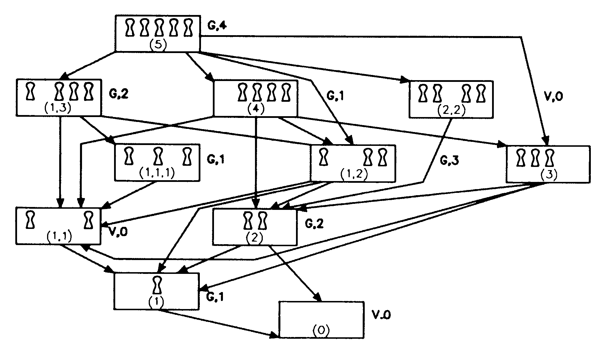
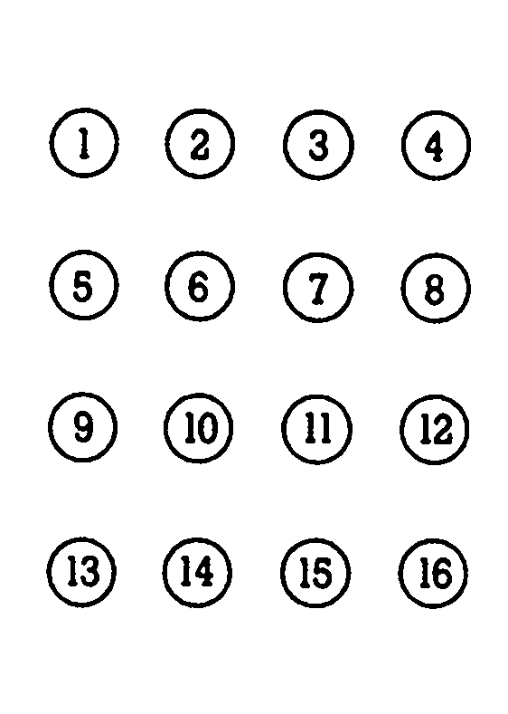
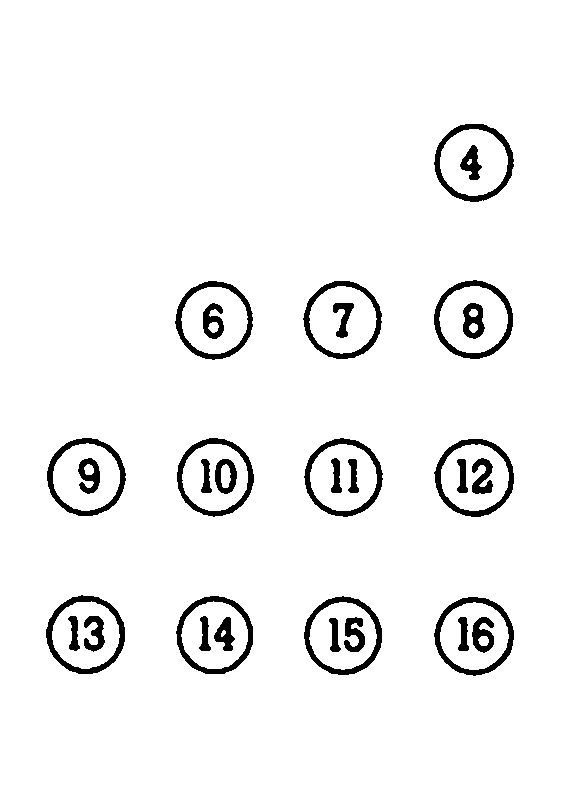
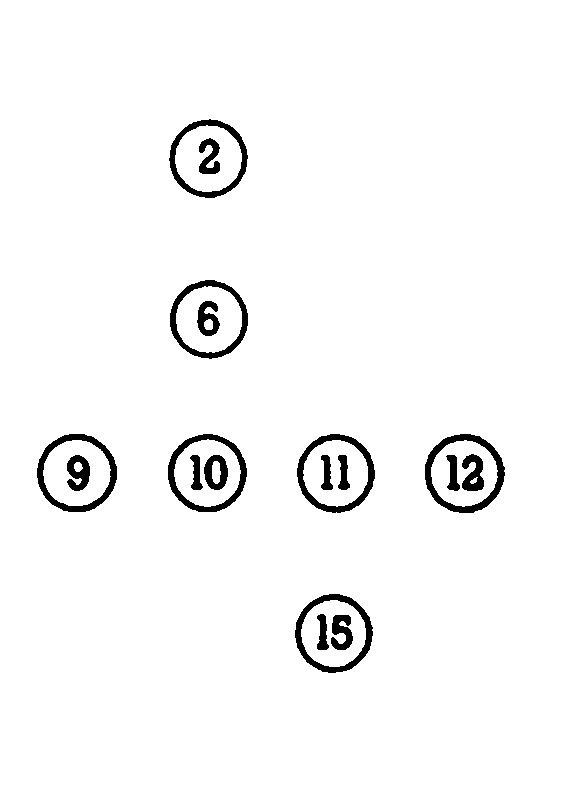

Computer-Knobeleien (3)
Unser mathematisches Strategiemodell wird weiter vervollständigt. Sie lernen die Behandlung der Remis-Positionen und die Sprague-Grundy-Funktion kennen.
In den ersten beiden Folgen sind wir auf Zweipersonenspiele eingegangen, an deren Ende jeweils ein eindeutiger Gewinner stand. Es wird Ihnen wieder überlassen sein, mit den erworbenen Kenntnissen die neuen »Knobelnüsse« zu knacken und sie Ihrem C 64/C 128 beizubringen.
Remis-Positionen
Bei einer Reihe von Spielen besteht die Möglichkeit, daß sich am Ende ein Unentschieden einstellt. Beim Nim-Spiel in den Grundvarianten, wie wir sie in der letzten Folge kennengelernt haben, ist dies nicht möglich. Deshalb werde ich an dieser Stelle ein neues Spiel vorstellen:
Würfel wenden — Es wird ein Spielwürfel beliebig auf den Tisch gelegt. Die obenliegende Augenzahl notiere man als Startposition »S«. Außerdem wird eine Grenzzahl »G« notiert. Abwechselnd wenden nun beide Spieler den Würfel um eine der vier Grundkanten. Die danach oben liegenden Augenzahlen werden zu der Startposition S dazuaddiert. Gewonnen hat, wem es gelingt, auf diese Weise die Grenzzahl G genau zu erreichen. Trifft keiner der Spieler die Grenzzahl, so endet die Partie unentschieden.
Bisher haben wir die Spielstellungen nach einfachen Regeln in Gewinn- und Verlustpositionen einteilen können. Mit dem Positionsgraphen hatten wir eine einfache Möglichkeit kennengelernt, Spielverläufe überschaubar grafisch darzustellen. Die Behandlung der Remis-Positionen wird unsere Überlegungen nur unwesentlich komplizieren.
Betrachten wir nun wieder eine konkrete Partie zu »Würfel wenden« mit der Grenzzahl G = 10. Die Spielpositionen sollen durch die Zahlenpaare (A,Z) dargestellt werden (A gibt die addierte Augensumme an, Z die oben liegende Augenzahl des Würfels). Bild 1 zeigt eine mögliche Partie mit der Startposition (2,2). Diese Partie endet unentschieden. Natürlich lautet hier die Frage: Haben beide Spieler optimal »gewendet« oder ist das Remis zufällig zustande gekommen? Das Problem läßt sich mit Hilfe von Tabelle 1 enthüllen, in der alle Zugmöglichkeiten zusammengefaßt sind. Den Zeilen entsprechen die Augensummen A = 1, 2,…. Gundinden Spalten wurden die Augenzahlen Z eingetragen. Gewinn- (+), Verlust- (-) und Remis- (0) Positionen sind entsprechend gekennzeichnet. Zusätzlich markieren die Zahlenpaare in den Feldern alle in Frage kommenden Vorgänger-Positionen in der Tabelle. So läßt sich zum Beispiel die Partie aus Bild 1 leicht verfolgen (dick umrandet).


Bekanntlich besteht eine geeignete Spielstrategie darin, dem Gegner möglichst immer eine Verlustposition vorzulegen. In unserem Beispiel aber hat jeder Spieler seinem Gegner Remis-Positionen vorlegen können. Beide Spieler haben somit optimal gespielt.
In der letzten Folge hatten wir drei Regeln kennengelernt, um Gewinn- und Verlustpositionen rekursiv zu bestimmen. Diese Beziehungen werden durch die beiden folgenden Regeln vervollständigt:
4) Jede Position ist entweder Gewinn-, Verlust- oder Remis-Position.
5) Jede Remis-Position, die nicht Endposition ist, hat mindestens eine Remis-Position, aber keine Verlustposition als Nachfolger.
Nach Regel 5 müssen sich somit Remis-Positionen durch geeignete Zugfolgen ohne Unterbrechung verketten lassen. Ebenso kann man aber einen Fehler machen, indem man dem Gegner eine Gewinnposition vorlegt. Selbstverständlich darf von einer Remis-Position aus keine Verlustposition erreichbar sein, was dem Begriff »Remis« widerspräche.
Von soviel Theorie zur Praxis:
1) Klügeln Sie ein Programm aus, das »Würfel wenden« für beliebig zu bestimmende Grenzzahlen G < = 50 optimal spielt. Erfinden Sie auch neue Regeln für ein Spiel mit mehreren Würfeln. Es gebe Spieler A die Grenzzahl G und Spieler B die Startposition S des Würfels vor. Welcher Spieler ist hier im Vorteil?
2) Führen Sie in Ihrem Nim-Programm Remis-Positionen ein, indem Sie zusätzlich eine minimale Entnahmezahl festlegen. Remis-Positionen liegen vor, wenn die Anzahl der übrigen Steine größer als Null ist und kleiner als die minimale Entnahmezahl wird.
Kegeln mit dem Computer
Ein anderes Kind aus der Nim-Familie soll uns nun zu einer weiteren eleganten Methode aus der Spieltheorie führen:
Kegeln — Auf einem Tisch stehen in m Gruppen in einer Reihe angeordnet insgesamt n Kegel. Rollt man eine Kugel gegen sie, so kann man einen oder zwei benachbarte Kegel aus der selben Gruppe umwerfen (entnehmen). Es gewinnt, wer den letzten Kegel umwirft. Wie hat eine Gewinnstrategie auszusehen?
Bild 2 zeigt den entsprechenden Positionsgraphen für eine Startposition mit einer Gruppe (m = l) und n = 5 Kegeln. Wieder läßt sich nach den uns bekannten Regeln jede Spielposition in Gewinn- und Verlustpositionen einteilen. Wie man leicht erkennt, besitzt der Spieler mit dem ersten Zug in diesem Beispiel eine Gewinnstrategie.

Kegeln ist eigentlich nichts anderes als Nim mit einer ständig wechselnden Zahl von Haufen. Gewinn- und Verluststellungen lassen sich somit direkt aus der jeweiligen Spielstellung berechnen. Das Verfahren der stellenweisen binären Addition (ohne Übertrag) hierzu kennen wir bereits. So ergeben die Nim-Summen für die (2,2)- und die (1,1)-Stellung
| 1 | 10 |
| 1 | 10 |
| 0 | 00 |
eindeutige Verlustpositionen.
Auf diese Weise ist jedoch nur eine spezielle Teilmenge der Positionen analysierbar.
Betrachtet man nämlich die Position (1,4), so ergibt die Fallunterscheidung hier eine Verlustposition, hingegen müßte entsprechend der Nim-Summe
| 1 |
| 100 |
| 101 |
eine Gewinnposition vorliegen. Eine entscheidende Idee, das Verfahren der Nim-Summenbildung zu erweitern, entwickelten 1936 der Berliner Mathematiker R. P. Sprague und wenig später P. M. Grundy unabhängig voneinander. Hierbei wird jeder Spielposition eine natürliche Zahl oder Null als »Rang« zugeordnet:
1) Die Endposition(en) hat (haben) den Rang Null.
2) Der Rang R einer Position ist die kleinste natürliche Zahl oder Null, die nicht auch gleichzeitig Rang eines der Nachfolger dieser Position ist.
Diese komplizierte, aber unvermeidbare Formulierung wird klar, wenn Sie die fett gedruckten Zahlen betrachten, die den G- und V-Positionen als Ränge zugeordnet sind (Bild 2). Wir erkennen daran auch, daß ein Knoten mit dem Rang 0 eine Verlustposition ist.
Es fällt uns aber am Positionsgraphen noch eine weitaus wichtigere Regel auf, die die eigentliche Erweiterung der Nim-Summenregel verkörpert (im Folgenden sei die Rangordnung dargestellt als R(a,b,…), als Symbol für die Nim-Summenbildung führe ich ein geklammertes plus (+) ein):
R(1) = 1, R(3) = 3, R(1,3) = 2 und 1(+)3 = 2
also ist R(l,3) = R(1) (+) R(3) = 2 (G-Position, ungleich Null)
Ebenso ist R(1,4) = R(1) (+) R(4) = 0(V-Position)
Dasselbe in Worten: Der Rang jeder Spielstellung ist gleich der Nim-Summe der Ränge aller Gruppen einer Spielposition. Mit Hilfe der Tabelle 2 können so immerhin für Kegelspiele bis n < = 15 alle Spielpositionen in G- und V-Stellungen eingeteilt werden. Die Ränge werden auch als Sprague-Grundy-Nummern bezeichnet und die Funktion, die einer Spielposition ihren Rang zuordnet, heißt Sprague-Grundy-Funktion. Sie sollten nun in der Lage sein, zum Beispiel zu zeigen, daß es sich bei (2,4,6) um eine V-Position handelt.
| n(m=1) | 0 | 1 | 2 | 3 | 4 | 5 | 6 | 7 | 8 | 9 | 10 | 11 | 12 | 13 | 14 | 15 |
|---|---|---|---|---|---|---|---|---|---|---|---|---|---|---|---|---|
| R(n) | 0 | 1 | 2 | 3 | 1 | 4 | 3 | 2 | 1 | 4 | 2 | 6 | 4 | 1 | 2 | 7 |
Tac Tix mit Taktik
Das Nim-Spiel eröffnet mit all seinen Variationen einen unermeßlich kreativen Freiraum. Eine der interessantesten Variationen erfand der Däne Piet Hein vor etwa 20 Jahren.
Tac Tix — Gemäß Bild 3a werden Steine quadratisch angeordnet (ebenso ist beliebiges m*n-Tac Tix möglich). Abwechselnd nehmen nun die Spieler einen oder mehrere Steine aus genau einer Zeile (waagerecht) oder Spalte (senkrecht). Wird mehr als ein Stein entnommen, so müssen diese benachbart sein. Wer den letzten Stein nimmt, verliert!



Piet Hein erfand später weitere, kompliziertere Variationen mit zwei- und dreidimensionalen Gestaltungen, die aber alle vom Prinzip der überschneidenden Mengen ausgingen. So kann das Spiel zum Beispiel ganz ähnlich auf drei- oder sechseckigen Brettern gespielt werden.
Versuchen Sie doch einmal, zu den Positionen in Bild 3b und 3c die Züge zu ermitteln, die den Gegner in eine garantierte Verlustposition bringen! Kein Problem? Um so besser. Stellen Sie die Sprague-Grundy-Funktion für ein 3x3-TacTix auf und schneidern Sie eine entsprechende Strategie für Ihren Commodore!
Zugegeben: Bis hierher war die aktive Mitarbeit bei diesem Kurs eine harte Nuß. Die Knobelecke ist keine Sammlung vorgefertigter Spielkonserven zum abtippen und konsumieren. Dafür besitzen Sie jetzt ein wichtiges Handwerkszeug, um sich von der Spielidee über eine Spielstrategie zum Programm vorzuarbeiten. Sie können Ihrem Computer jetzt Nim, Reversi oder Mühle beibringen. Und weil dies ein Kurs zum Mitgestalten ist, sind natürlich Ihre Programmvorschläge, Anregungen und Kritik bei uns in der Redaktion am besten aufgehoben!
In der nächsten Folge werden wir unsere Bemühungen mit einem kniffligen Problem krönen: Wir werden unseren Commodore das Damespielen lehren.
(Matthias Rosin/dm)